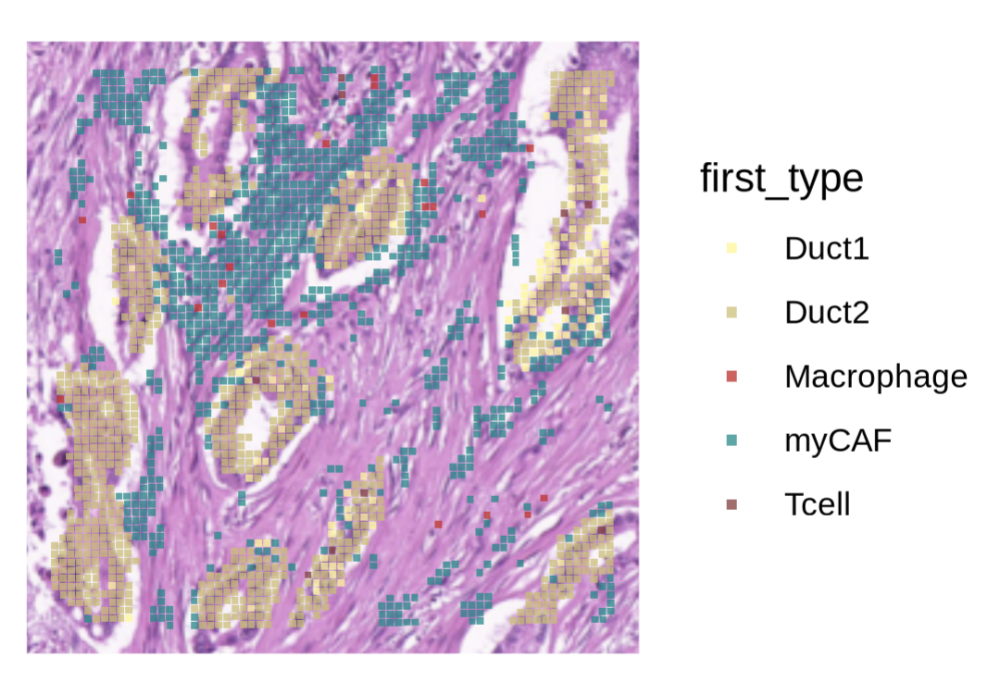
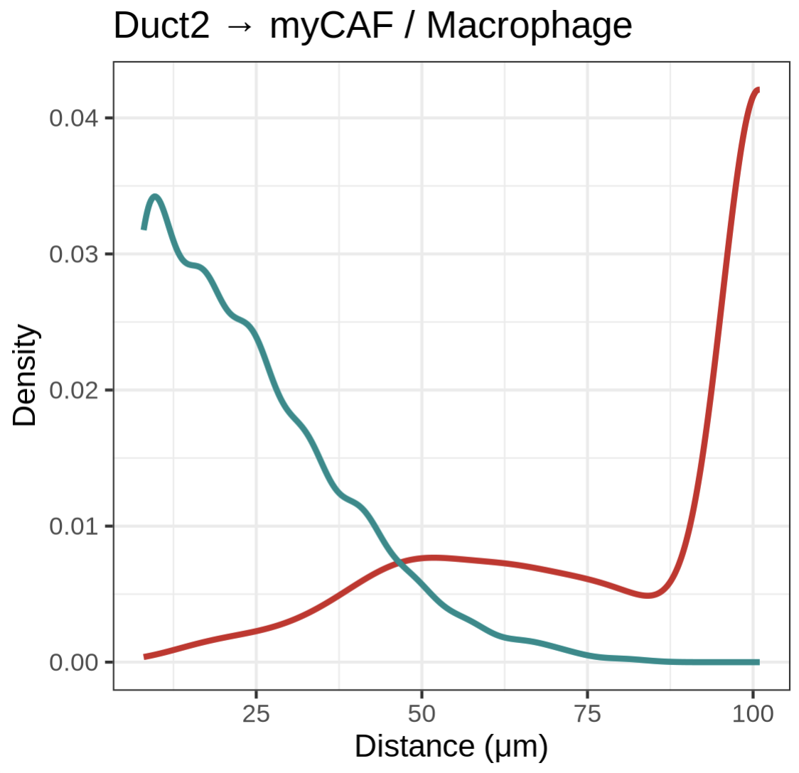
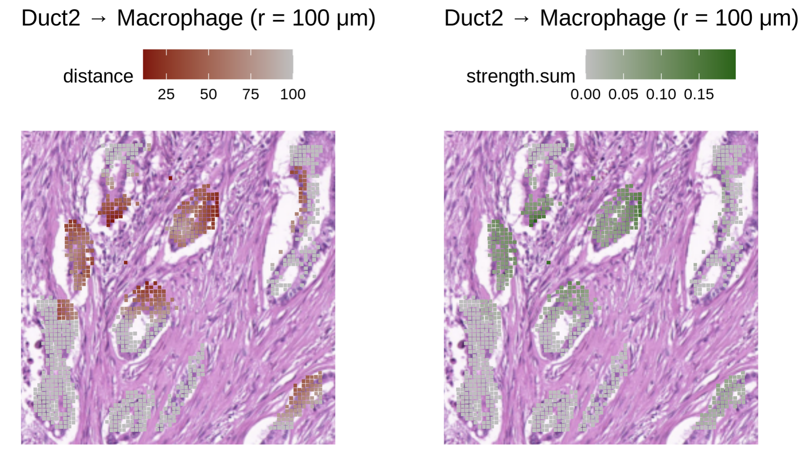
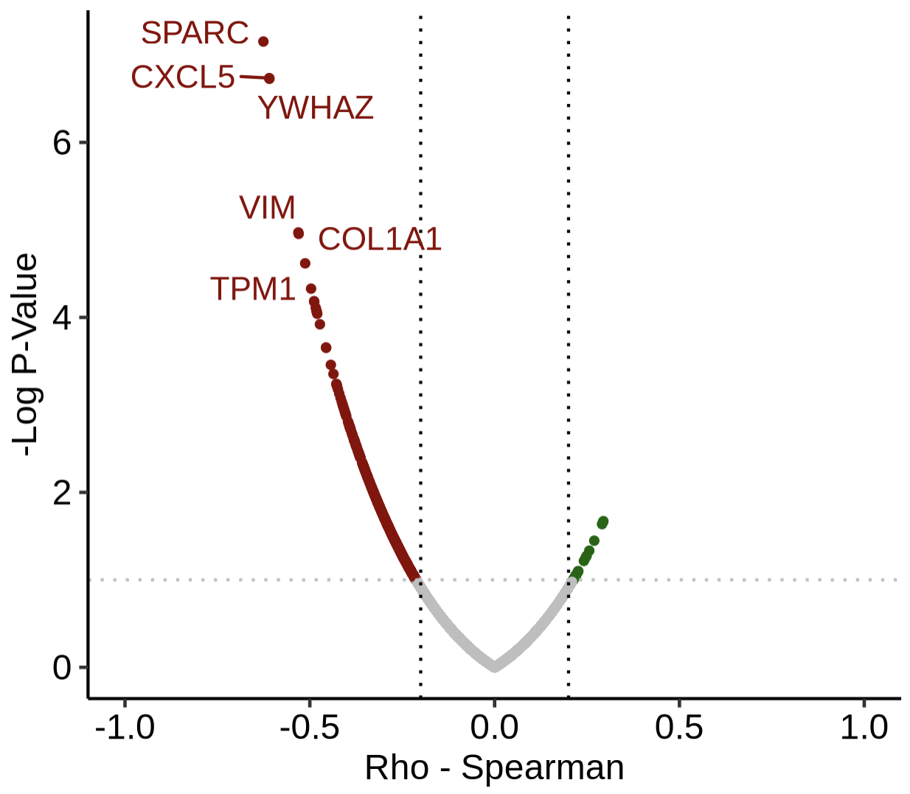
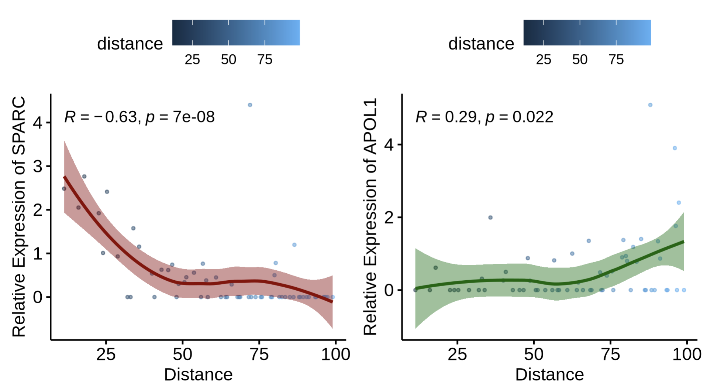

10x Visium HD Tutorial (internal datasets)
This page demonstrates the Visium HD workflow with stGrads in the same Step1–Step4 style as the Visium tutorial.
We will load an internal HD Seurat object from a supplementary .rds file, compute distance/strength matrices, visualize spatial maps, and identify distance-related genes (DRGs).
Prepare environment & load the HD object
Load required packages and read the demo Seurat object (e.g.,
HD_demo_1.rds) shipped as a supplementary file. We also render a quick spatial overview for context.
set.seed(1113)
library(Seurat)
library(ggplot2)
library(ggsci)
library(stringr)
library(stGrads)
options(future.globals.maxSize = 10*1024^3)
# ---- Load Visium HD Seurat object ----
st.hd <- readRDS("HD_demo_1.rds")
# ---- Spatial overview by 'first_type' ----
SpatialDimPlot(
st.hd,
group.by = "first_type",
image.scale = "hires",
crop = TRUE,
shape = 22, # square spots for HD
pt.size.factor = 80 * st.hd@images[["slice1"]]@scale.factors[["hires"]],
alpha = 0.75
) +
scale_fill_manual(values = c("#FFF68F","#CDBE70","#CD2626","#008B8B","#8B3A3A"))

Run the stGrads Visium HD Demo (Step1–Step4)
The following steps mirror the Visium tutorial’s structure and incorporate your HD demo code.
Step1 — Compute ring-distance matrices from a query cell type
Goal: quantify distances (in μm) from query spots (e.g., Duct2) to specific reference phenotypes (e.g., myCAF, Macrophage) using HD-aware geometry.
Key args:
celltype: metadata column storing cell/phenotype labels (here"first_type").query_celltype: the focal class whose distances you’ll measure from (e.g.,"Duct2").pheno_choose: the reference phenotype to measure distances to (e.g.,"myCAF").max.r: radius cutoff (μm).resolution: grid resolution (tune to HD spot density).
# ---- Distances: Duct2 -> myCAF ----
dis_mtx.Duct2_myCAF <- CalcNearDis_HD(
st.hd,
celltype = "first_type",
query_celltype = "Duct2",
pheno_choose = "myCAF",
max.r = 100,
resolution = 8
)
##[1] "Ref_spots numbers is:912"
##[1] "Query_spots numbers is:977"
# ---- Distances: Duct2 -> Macrophage ----
dis_mtx.Duct2_Mp <- CalcNearDis_HD(
st.hd,
celltype = "first_type",
query_celltype = "Duct2",
pheno_choose = "Macrophage",
max.r = 100,
resolution = 8
)
##[1] "Ref_spots numbers is:22"
##[1] "Query_spots numbers is:977"
# Combine for inspection/plot
dis_mtx.Duct2_myCAF$ref <- "myCAF"
dis_mtx.Duct2_Mp$ref <- "Macrophage"
dff <- rbind(dis_mtx.Duct2_myCAF, dis_mtx.Duct2_Mp)
dff$distance <- as.numeric(dff$distance)
# Distance distribution (μm)
ggplot(dff) +
geom_density(aes(x = distance, colour = ref), linewidth = 1) +
theme_bw() +
labs(title = "Duct2 → myCAF / Macrophage (r = 100 μm)", x = "Distance (μm)", y = "Density") +
theme(legend.position = "none") +
scale_color_manual(values = c("#CD2626","#008B8B"))

Step2 — (Optional) Compute interaction strength with a decay model
Goal: in addition to distances, estimate interaction strength from the query to reference spots using a chosen decay model. Key args:
calc.strength = TRUEto enable strength computation.model:"Linear" | "Log" | "Exp"selects how strength decays with distance.Normalize to [0,1] for easy plotting.
# ---- Strengths: Duct2 -> myCAF ----
stg_mtx.Duct2_myCAF <- CalcNearDis_HD(
st.hd,
celltype = "first_type",
query_celltype = "Duct2",
pheno_choose = "myCAF",
max.r = 100,
resolution = 8,
calc.strength = TRUE,
model = "Linear"
)
# ---- Strengths: Duct2 -> Macrophage ----
stg_mtx.Duct2_Mp <- CalcNearDis_HD(
st.hd,
celltype = "first_type",
query_celltype = "Duct2",
pheno_choose = "Macrophage",
max.r = 100,
resolution = 8,
calc.strength = TRUE,
model = "Linear"
)
stg_mtx.Duct2_myCAF$ref <- "myCAF"
stg_mtx.Duct2_Mp$ref <- "Macrophage"
dff.stg <- rbind(stg_mtx.Duct2_myCAF, stg_mtx.Duct2_Mp)
# Normalize summed strength for visualization
dff.stg$strength.sum <- dff.stg$strength.sum / max(dff.stg$strength.sum, na.rm = TRUE)
# Example density plot (uncomment to render)
# ggplot(dff.stg) +
# geom_density(aes(x = strength.sum, colour = ref), linewidth = 2) +
# theme_bw() +
# labs(title = "Duct2 → myCAF / Macrophage (r = 100 μm)", x = "Relative Strength", y = "Density") +
# theme(legend.position = "none") +
# scale_color_manual(values = c("#CD2626","#008B8B"))
Step3 — Spatial maps: distance rings & interaction strength
Goal: draw distance rings and strength maps on the HD tissue image. Tips:
Use
img.use = "hires"and squareshape = 22for HD.Scale point size with
hiresscale factor.
#! if met error:
# Error in slot(from, what) :
# no slot of name "misc" for this object of class # "VisiumV2"
#!RUN:
# st.hd <- UpdateSeuratObject(st.hd)
# ---- Distance rings: Duct2 -> Macrophage (r = 100 μm) ----
PlotNearDis(
st.hd,
nearest_ref_info = dis_mtx.Duct2_Mp,
max.dis = 100,
color = c("darkred","gray"),
shape = 22,
img.use = "hires",
image.alpha = 1,
pt.size.factor = 80 * st.hd@images[["slice1"]]@scale.factors[["hires"]]
) + labs(title = "Duct2 → Macrophage (r = 100 μm)")
# ---- Strength map: Duct2 -> Macrophage (r = 100 μm) ----
PlotStrengthDis(
st.hd,
nearest_ref_info = stg_mtx.Duct2_Mp,
max.dis = 100,
color = c("gray","darkgreen"),
shape = 22,
img.use = "hires",
image.alpha = 1,
pt.size.factor = 80 * st.hd@images[["slice1"]]@scale.factors[["hires"]]
) + labs(title = "Duct2 → Macrophage (r = 100 μm)")

Step4 — Downstream: DRGs and distance–expression relationships
Goal: identify Distance-Related Genes (DRGs) with CalcDRG, then visualize how expression changes with distance from the reference.
# ---- Find DRGs (Distance-Related Genes) ----
st.hd <- NormalizeData(st.hd)
DRGs <- CalcDRG(
st.hd,
nearest_ref_info = dis_mtx.Duct2_Mp,
layer = "data",
assay = "Spatial",
pthresh = 1,
log.trans = FALSE,
filt_root = TRUE,
filt_far = 100
)
head(DRGs)
# rho pvalue
# NOC2L -0.09532062 0.46493640
# KLHL17 -0.05884603 0.65236098
# PLEKHN1 0.08831333 0.49853035
# HES4 -0.23190598 0.07211730
# ISG15 -0.31018989 0.01497929
# AGRN -0.12869089 0.32294101
PlotDRGs(DRGs)

# ---- Distance vs expression: example genes ----
# SPARC vs distance (Duct2 -> Macrophage)
PlotDisExpr(
seurat.obj = st.hd,
nearest_ref_info = dis_mtx.Duct2_Mp,
ref_col = "distance",
assay = "Spatial",
gene = "SPARC",
col = "darkred",
log.trans = FALSE,
filt_root = TRUE,
filt_far = 100
)
# APOL1 vs distance (Duct2 -> Macrophage)
PlotDisExpr(
seurat.obj = st.hd,
nearest_ref_info = dis_mtx.Duct2_Mp,
ref_col = "distance",
assay = "Spatial",
gene = "APOL1",
col = "darkgreen",
log.trans = FALSE,
filt_root = TRUE,
filt_far = 100
)

Notes
HD specifics:
img.use = "hires"andshape = 22better match HD spot geometry; scale point size with the hires factor.Radius/model: choose
max.r(μm) andmodel(Linear/Log/Exp) to fit your biological interaction range.Metadata: ensure
first_typecontains correct annotations (e.g.,Duct2,myCAF,Macrophage).Reproducibility: for publication, run on the full object (no downsampling) and fix random seeds where applicable.
Session info
sessionInfo()